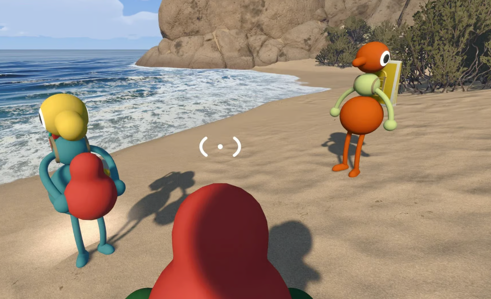

Quick answer: You can play with friends online across supported platforms, but each person needs their own compatible device and copy of the game.

Community gameplay screenshot supplied by the site owner. This independent guide is not affiliated with House House or Panic.
The short answer
- There is no split-screen mode.
- There is no couch co-op mode.
- There is no public random matchmaking.
Why online matters
- The game’s communication systems change with distance.
- Players can use proximity voice or in-game text chat as part of cooperative problem-solving.
- Playing side by side would remove some of the intended distance and sound-based challenges.
How to play together instead
- Choose a host and start an online session.
- Join through platform friends or a private Join Code.
- Use crossplay when friends are on different supported systems.
Official sources
Release, platform, player-count, hosting and crossplay facts are checked against the official Big Walk FAQ and the official Steam page. Last checked August 27, 2026.
Related guides
Co-op multiplayer guide · Crossplay guide · Player count · Steam version